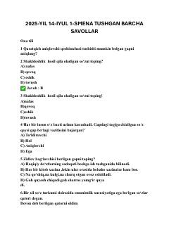

BK2025-yil 14-iyul kirish imtihonlari savollari va ularning yechimlari to'plami.
Ushbu to'plam 2025-yil 14-iyulda o'tkazilgan kirish imtihonlarining 1-smena savollari va ularning batafsil yechimlarini o'z ichiga oladi. Qo'llanmada ona tili, tarix, matematika va biologiya fanlaridan test topshiriqlari keltirilgan.